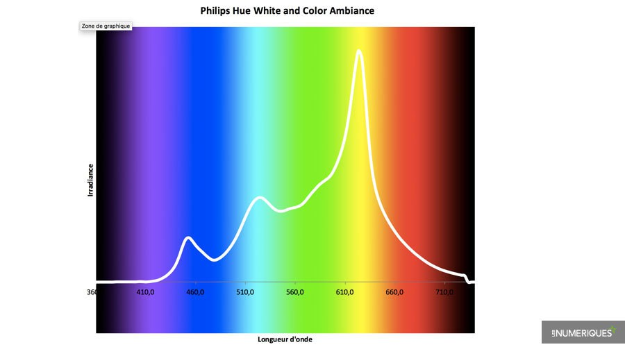

Nous voilà enfin, là où le savoir va naître. Philips nous en fait voir de toutes les couleurs. C’est le cas de le dire puisque Philips sort le grand jeu en mettant sur le marché une gamme d'ampoules connectées, il y a celles qui difusent un éclairage blanc, chaud ou froid, mais surtout celles qui diffusent un éclairage en couleur.
Toutes proposent différents culots pour s’adapter à toutes les douilles.

Nous allons nous intéresser ici au Hue white and color qui s’allumeront aussi bien en blanc que dans toutes les autres couleurs. Comme toutes les ampoules de la gamme, elles peuvent se connecter en Bluetooth, Wifi ou encore en ZigBee.
Le ZigBee est très utile, puisque c’est une liaison bas débit qui permet de passer au travers des murs très épais et qui consomme très peu d’énergie et de ce fait plus efficace que le Bluetooth. La connexion à l’application est quant à elle assez rapide.

Cette application permet un pilotage jusqu'à 50 ampoules, sur place ou à distance (seulement en wifi). Il est possible de prérégler des ambiances, mais aussi de laisser libre cours à vos envie du moment avec
16 millions de choix de couleurs. L’application vous offre toute sorte de fonctionnalités utiles, comme par exemple l'allumage des ampoules qui s’allument dès qu'elles détectent votre smartphone à proximité ou encore un mode réveil qui permet de vous réveiller en douceur. Et tout cela grâce au pont de connexion.
 Les Phillips Hue sont connues pour avoir une qualité de lumière remarquable, et effectivement, le rendu est impresssionant. Avec des valeurs allant de 2698 à 6758 Kelvin, rappelons les valeurs de référence : 2 700K pour la température d'une bougie et 6 500K pour celle de la lumière du jour.
Ces ampoules peuvent atteindre une luminosité de 126,9 lux, correspondant au niveau d’éclairage pour une pièce de vie "normale" qui est compris entre 100 et 200 lux et cela pour une consommation réduite. Effectivement, ces ampoules consomment à peine 7,7W. Ce qui fait d’elles un excellent rapport entre la luminosité et la consommation.
Par contre, avoir la chance de voir la vie en rose tous les jours à un prix : il vous faudra débourser pas moins d'une centaine d'euros pour disposer de 2 ampoules auquel il faudra rajouter le prix du pont de connexion et autre application.
Toutes ces informations viennent du site Les Numériques